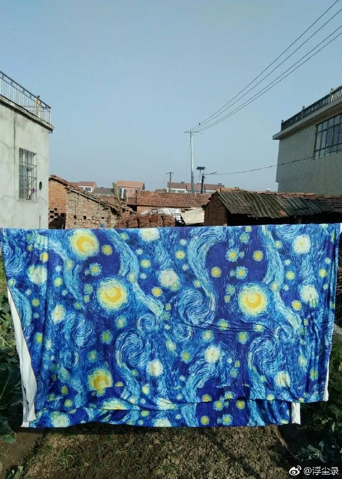

「 隔离日记 」 20200206
原文链接 备份链接 播放音乐 | 阅读效果更佳 感谢 | 您对霍超LEGAL的关注、阅读与分享 今天在朋友圈里看到的最多的一句话，是武汉作家方方的一段话，“时代的一粒灰，落在个人头上，就是一座山。我们唯一的事，就是把这一切都扛下来。” …

（1）
随着我亲戚关注我的公众号越来越多（在我堂姐热情推送下），我越发不敢写家里的事情了。一旦涉及到真实的人际关系，情况就复杂很多。以前我的文字跟我的父母是隔开的，现在我今天写了什么，隔壁的婶娘就会跑去跟我父亲说：“哎哟，你庆儿写你夹菜，一夹一碗就空了！”
（2）
在家里实在待得太闷了，便到外面阳台上放风，楼下一个婶娘路过：“秀才哎，你是不是在写公众号啊？”我吃了一惊，“你么晓得？”她说：“我儿告诉我的……前面屋的你写了，左边屋的你写了，右边屋的你也写了，我这个后面屋的婶娘儿你就不写咯？”我一时间不知如何回应，她接着大声地说：“我都看了一年咯！还没写到我！”我母亲突然从楼下的灶房探出头来，“让你儿子自家写咯！要写几多有几多！”

（3）
以前母亲车祸后，脚受了伤，每天婶娘们来我家陪着她打牌说话。打一下午，输赢都在一两块之间。她说从来没有这么轻松过。想想真是要泪落。
（4）
隔壁婶娘晒床单，一看居然是梵高的《星空》。我夸床单几好看，婶娘高兴地说：“我在镇上看到的，养眼！我就买咯！”

（5）
随口夸了一声婶娘家那棵树上柑子长得好，婶娘拿把剪刀从灶屋冲出来，吓我拔腿就跑，婶娘连忙喊住我，“莫动！”没想到她剪了一大袋子送过来。柑子熟透了，吃起来没有橘子那么多汁，但也挺甜的。

（6）
大家还是相信读书人能力的！身为我们这一片学历最高的人，隔壁读五年级的小孩子的数学题（真的很难），后面人家电视机坏了换不了台……都跑来问我，虽然我百般努力，还是以失败告终。婶娘说：“你这读书都读个么子鬼？！是读到牛屁眼里去了？！”
（7）
以前没有疫情的时候。太阳出来了，婶娘们过来跟我母亲吃瓜子聊天。她们简直是故事播放机，讲的人事生动活泼得不得了。我坐在一边默默听她们说话，她们说着说着看我：“你是不是要写？”我笑笑不说话，她们又说：“俺乡下人几可怜几折磨，你要多写点儿。”我说：“晓得咯。”

邓安庆
长按二维码向我转账
受苹果公司新规定影响，微信 iOS 版的赞赏功能被关闭，可通过二维码转账支持公众号。
原文链接 备份链接 播放音乐 | 阅读效果更佳 感谢 | 您对霍超LEGAL的关注、阅读与分享 今天在朋友圈里看到的最多的一句话，是武汉作家方方的一段话，“时代的一粒灰，落在个人头上，就是一座山。我们唯一的事，就是把这一切都扛下来。” …
原文链接 备份链接 播放音乐 | 阅读效果更佳 感谢 | 您对霍超LEGAL的关注、阅读与分享 _特别感谢小吴同学，日记有了衍生周边2333 _ 十分感人的是，在写日记的第五天，收到了小吴同学的漫画祝福，显得自己好像是在有猫、有狗、有光、 …
原文链接 备份链接 播放音乐 | 阅读效果更佳 感谢 | 您对霍超LEGAL的关注、阅读与分享 依据国务院2020年春节放假延长的通知，今天本应该是正式开始工作的日子，然而由于疫情的原因，全国多地的企业受地方政府的明确要求，只能继续暂停运 …
原文链接 备份链接 1月23日清早起来时，看到武汉封城的消息。起床后跟正在做饭的母亲说了一声，母亲不是很能理解，也不大关注。这几天一直在她耳边念叨太多疫情的事情，我感觉她都有些消化不过来了。很快黄冈市区也封城了，到了下午我老家武穴也传出了 …
原文链接 备份链接 2020年2月12日。 农历正月十九。 武汉封城第廿一天。 天门封城第二十天。 今早没敢发给你看的，就是这个视频。——可别怪我咯，谁让他们这时候放出来。要我说，陈导团队也万万没料到，这年头居然会灾到连一顿像样的火锅都 …